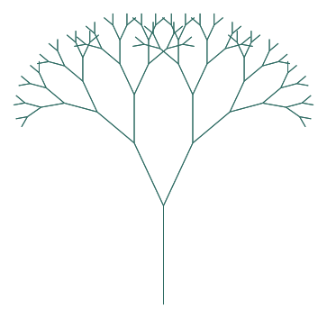
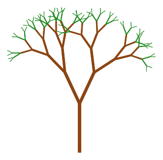
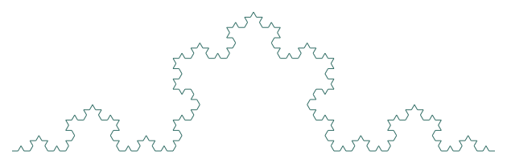
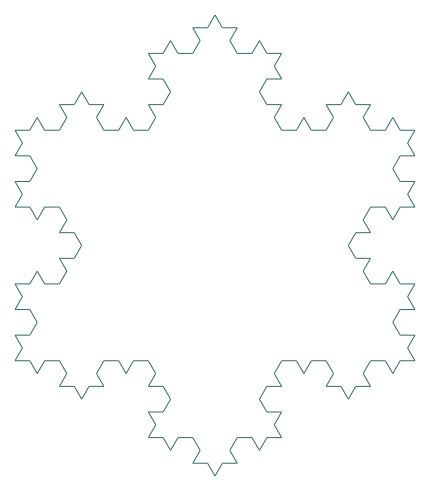
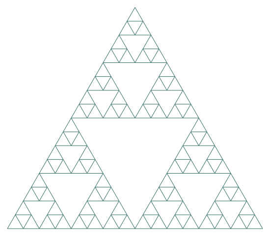
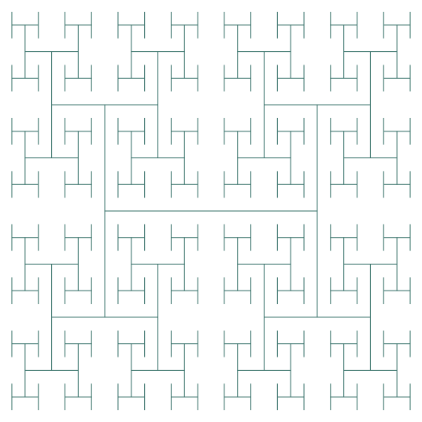
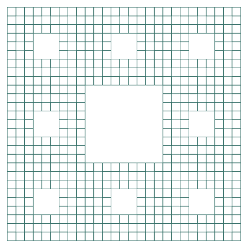
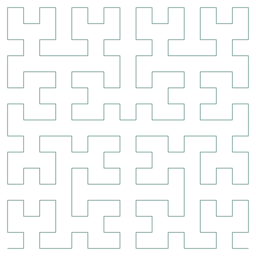

★☆☆☆☆ · 基础1. 二叉分形树一、题目画出7层树：每次分两支，长度变为0.7倍，左右各偏转25°。二、解析停止条件是depth等于0，表示没有下一层。当前调用先画一根枝，再左右各调用一次；长度乘0.7，层数减1。每次返回前后退同样的长度，并恢复方向，这样另一支才能从分叉点开始。三、参考答案展开完整代码与核对说明核对与变式：把角度改成15°和35°，比较树冠宽度。下载Python代码# 教学改编练习，非赛事真题 # turtle是Python自带的绘图模块；起别名t后，后面可以用t调用它。 import turtle as t # math提供sqrt等数学函数。 import math # random提供随机数和随机选择功能。 import random # 设置绘图窗口的宽度和高度。 t.setup(900, 700) # 使用最快绘图速度。 t.speed(0) # 暂停逐笔刷新，减少递归绘图等待。 t.tracer(False) # 隐藏海龟图标，让图形更清楚。 t.ht() # length表示当前枝长，depth表示还要画几层。 def tree(length, depth): # 递归出口：层数用完后停止。 if depth == 0: # return结束本次函数，并回到上一层调用的位置。 return # 海龟沿当前朝向画出这一段树枝。 t.forward(length) t.left(25) # 递归画更短的树枝，同时把层数减1。 tree(length * .7, depth - 1) t.right(50) # 递归画更短的树枝，同时把层数减1。 tree(length * .7, depth - 1) t.left(25) # 沿原路退回分叉点，接着绘制另一根树枝。 t.backward(length) # 回到进入本次调用的位置 t.penup() t.goto(0, -220) t.setheading(90) t.pendown() tree(110, 7) # 一次性显示已经完成的图形。 t.update() # 保持绘图窗口打开，直到手动关闭。 t.done() 原始教学题目来源 · 本版已改写为Python标准库turtle。
★★☆☆☆ · 基础进阶2. 会变色的自然树一、题目把末端两层变成绿色，主干较粗，分叉角度在15°—40°之间随机变化。二、解析递归结构与二叉树相同，先保证位置与方向能恢复。用depth决定粗细和颜色，越接近末端越细，最后两层用绿色。每次选一个随机角度，左右转动保持配对。子调用会改变画笔，所以回程前恢复父枝的样式。三、参考答案展开完整代码与核对说明核对与变式：换一个随机种子，保持停止条件不变。下载Python代码# 教学改编练习，非赛事真题 # turtle模块提供画笔、移动和转向命令。 import turtle as t import math # random模块为每次分叉随机选择角度。 import random t.setup(900, 700) t.speed(0) t.tracer(False) t.ht() # 固定随机种子，让每次生成的树都一样，方便比较。 random.seed(7) # 固定种子，方便重复观察 # 每次调用先画当前树枝，再递归画左右两根小树枝。 def tree(length, depth): # 到达最后一层时停止，这是递归出口。 if depth == 0: return # 层数越高，树枝画得越粗；最细仍保留1像素。 width = max(1, depth) # 最末两层用绿色，较粗的树枝用棕色。 color = "forestgreen" if depth <= 2 else "saddlebrown" t.pensize(width) t.pencolor(color) t.forward(length) # randint会包含两个端点，所以角度可能是15度或40度。 angle = random.randint(15, 40) t.left(angle) # 子枝长度缩到原来的70%，递归层数减1。 tree(length * .7, depth - 1) t.right(angle * 2) # 子枝长度缩到原来的70%，递归层数减1。 tree(length * .7, depth - 1) t.left(angle) # 子树会修改颜色和粗细，返回后恢复再画回程 t.pensize(width) t.pencolor(color) # 画完子枝后回到分叉点，让上一层继续绘图。 t.backward(length) t.penup() t.goto(0, -220) t.setheading(90) t.pendown() tree(100, 7) t.update() t.done() 原始教学题目来源 · 本版已改写为Python标准库turtle。
★★☆☆☆ · 中等3. 科赫曲线一、题目将每条线替换成四段等长小线，形成三角凸起；绘制0—4层。二、解析0层只画直线；更高层把长度分成三份。一次调用依次画四段小科赫曲线，中间按左60°、右120°、左60°转向。四次子调用长度均为原来的三分之一，depth都减1；结束后方向与进入时相同。三、参考答案展开完整代码与核对说明核对与变式：第4层应有256条最小线段。下载Python代码# 教学改编练习，非赛事真题 # turtle是Python自带的绘图模块。 import turtle as t import math import random t.setup(900, 700) t.speed(0) t.tracer(False) t.ht() # 递归地替换一段线；length和depth分别表示长度和层数。 def koch(length, depth): # depth为0时画一条直线，然后停止。 if depth == 0: # 画出最小的一段线。 t.forward(length) # 当前线段画完，return回到调用它的位置。 return # 子线段长度缩为三分之一，递归层数减1。 koch(length / 3, depth - 1) # 转向，画出向外凸起的三角形部分。 t.left(60) # 子线段长度缩为三分之一，递归层数减1。 koch(length / 3, depth - 1) t.right(120) # 子线段长度缩为三分之一，递归层数减1。 koch(length / 3, depth - 1) # 转向，画出向外凸起的三角形部分。 t.left(60) # 子线段长度缩为三分之一，递归层数减1。 koch(length / 3, depth - 1) t.penup() t.goto(-300, -90) t.pendown() koch(600, 4) t.update() t.done() 原始教学题目来源 · 本版已改写为Python标准库turtle。
★★★☆☆ · 中等4. 科赫雪花一、题目将三条科赫曲线连接成一个闭合雪花，默认递归3层。二、解析先把一条科赫曲线封装成函数，与上一题共用递归规则。外层循环重复三次，每次画一条大边后向右转120°。先用0层检查等边三角形闭合，再增加层数；不闭合时优先检查大边转向。三、参考答案展开完整代码与核对说明核对与变式：检查起点与终点重合；三层共192条小线段。下载Python代码# 教学改编练习，非赛事真题 # turtle提供画笔和移动命令。 import turtle as t import math import random t.setup(900, 700) t.speed(0) t.tracer(False) t.ht() # 递归绘制雪花的一条边。 def koch(length, depth): # 递归出口是一条直线段。 if depth == 0: # 画出最短的边。 t.forward(length) # 停止这一支递归，并返回调用位置。 return # 四段较小曲线和对应转向组成一段科赫曲线。 for angle in [60, -120, 60, 0]: # 边长缩为三分之一，层数减1后继续递归。 koch(length / 3, depth - 1) t.left(angle) t.penup() t.goto(-200, 120) t.pendown() # 三条相同的科赫曲线组成封闭雪花。 for i in range(3): koch(400, 3) # 每到一个外角，就按相同角度转向。 t.right(120) t.update() t.done() 原始教学题目来源 · 本版已改写为Python标准库turtle。
★★★☆☆ · 中等5. 谢尔宾斯基三角形一、题目只画三个角上的半尺寸三角形，中心留空，递归4层。二、解析0层画一个完整等边三角形。其他层不画大三角形，只在左下、右下和上方放三个半尺寸子三角形。上方起点比左下向右移动原边长的四分之一、向上移动原边长乘√3再除以4。每个子调用都减一层。三、参考答案展开完整代码与核对说明核对与变式：4层有81个最小三角形。下载Python代码# 教学改编练习，非赛事真题 # turtle用来绘制三角形的边。 import turtle as t # math.sqrt(3)用于计算等边三角形的高度比例。 import math import random t.setup(900, 700) t.speed(0) t.tracer(False) t.ht() # x、y指定左下角位置，size和depth控制大小与层数。 def triangle(x, y, size, depth): # 到达递归出口时，画出一个完整的小三角形。 if depth == 0: # 移动到起点时抬起画笔，避免留下多余连线。 t.penup() t.goto(x, y) t.setheading(0) # 放下画笔，开始绘制三条边。 t.pendown() for i in range(3): t.forward(size) t.left(120) return # 每个子三角形的边长是父三角形的一半。 half = size / 2 # 递归绘制左下方的子三角形。 triangle(x, y, half, depth - 1) # 递归绘制右下方的子三角形。 triangle(x + half, y, half, depth - 1) # 递归绘制上方的子三角形。 triangle(x + half / 2, y + half * math.sqrt(3) / 2, # 递归绘制上方的子三角形。 half, depth - 1) triangle(-260, -220, 520, 4) t.update() t.done() 原始教学题目来源 · 本版已改写为Python标准库turtle。
★★★☆☆ · 中等6. H 树一、题目先画一个H，在四个端点递归画半尺寸H，共4层。二、解析用中心(x,y)、尺寸size和剩余层数定义一个H。0层返回。一个H由一条横线和两条竖线组成，先确定四个端点。在四个端点分别调用自己，尺寸减半、层数减1。坐标定位避免依赖上一次画线的方向。三、参考答案展开完整代码与核对说明核对与变式：4层有85个H，共255条线段。下载Python代码# 教学改编练习，非赛事真题 # turtle用来绘制H形线段。 import turtle as t import math import random t.setup(900, 700) t.speed(0) t.tracer(False) t.ht() # 根据起点和终点坐标画一条线段。 def line(x1, y1, x2, y2): t.penup() # 抬笔移动到线段起点，不画连接线。 t.goto(x1, y1) t.pendown() # 从起点落笔，画到终点。 t.goto(x2, y2) # x、y是H的中心，size和depth控制大小与递归层数。 def htree(x, y, size, depth): # 没有更小的H要画时，停止递归。 if depth == 0: return # H的每个端点距离中心都是边长的一半。 half = size / 2 line(x - half, y, x + half, y) line(x - half, y - half, x - half, y + half) line(x + half, y - half, x + half, y + half) # 依次处理这个H的左端和右端。 for dx in [-half, half]: # 在每一端的上方和下方继续递归画小H。 for dy in [-half, half]: htree(x + dx, y + dy, size / 2, depth - 1) htree(0, 0, 270, 4) t.update() t.done() 原始教学题目来源 · 本版已改写为Python标准库turtle。
★★★★☆ · 拓展7. 谢尔宾斯基地毯一、题目把正方形分成九宫格，跳过中心，在其他8格递归，共3层。二、解析0层画保留小方块的轮廓。把尺寸除以3，行列各枚举0、1、2，得到九宫格起点。行列同时等于1时跳过，剩余八格递归。位置每次移动一格尺寸，depth减1；轮廓之间的空白形成地毯。三、参考答案展开完整代码与核对说明核对与变式：3层有512个最小正方形。下载Python代码# 教学改编练习，非赛事真题 # turtle用来绘制地毯中保留的正方形轮廓。 import turtle as t import math import random t.setup(900, 700) t.speed(0) t.tracer(False) t.ht() # x、y是正方形左下角坐标；size和depth控制大小与层数。 def carpet(x, y, size, depth): # 到达递归出口时，画出最小的保留正方形。 if depth == 0: # 抬笔移动到正方形角点，不留下线。 t.penup() t.goto(x, y) t.setheading(0) # 依次画出正方形的四条边。 t.pendown() for i in range(4): t.forward(size) t.left(90) return # 把父正方形分成九个大小相同的小格。 third = size / 3 # row和col分别表示九宫格中的行号和列号。 for row in range(3): for col in range(3): # 跳过正中间的小格，留下地毯的空洞。 if row == 1 and col == 1: continue # 中间留空 # 对其余八个小格继续递归。 carpet(x + col * third, y + row * third, third, depth - 1) carpet(-240, -240, 480, 3) t.update() t.done() 原始教学题目来源 · 本版已改写为Python标准库turtle。
★★★★★ · 挑战8. 希尔伯特曲线一、题目用递归画4层连续折线；不抬笔，所有转向都是90°。二、解析先用1层观察一个U形，0层不画线直接返回。每个更高层由四个低一层的子图和三条连接线组成；子图之间转90°。角度的正负控制子图朝向。层数变化时，用480÷(2的depth次方−1)计算步长，保持图形总宽约480。三、参考答案展开完整代码与核对说明核对与变式：4层有255条线段。下载Python代码# 教学改编练习，非赛事真题 # turtle用来绘制连续的希尔伯特曲线。 import turtle as t import math import random t.setup(900, 700) t.speed(0) t.tracer(False) t.ht() # depth是递归层数，angle是转向角度，step是每段长度。 def hilbert(depth, angle, step): # 递归出口：第0层不再绘制曲线。 if depth == 0: # 结束这一支递归，回到上一层调用。 return # 转向，确定第一段子曲线的朝向。 t.left(angle) # 反转转向方向，递归绘制较小曲线。 hilbert(depth - 1, -angle, step) # 画一条直线，把相邻的子曲线连接起来。 t.forward(step) t.right(angle) # 保持当前朝向，递归绘制下一段子曲线。 hilbert(depth - 1, angle, step) # 画一条直线，把相邻的子曲线连接起来。 t.forward(step) # 保持当前朝向，递归绘制下一段子曲线。 hilbert(depth - 1, angle, step) t.right(angle) # 画一条直线，把相邻的子曲线连接起来。 t.forward(step) # 反转转向方向，递归绘制较小曲线。 hilbert(depth - 1, -angle, step) # 转向，确定第一段子曲线的朝向。 t.left(angle) # 设置4层递归，图形较完整且仍容易观察。 depth = 4 # 开始绘图前先抬笔移动到起点。 t.penup() t.goto(-240, -240) # 落笔，开始绘制曲线。 t.pendown() hilbert(depth, 90, 480 / (2 ** depth - 1)) t.update() t.done() 原始教学题目来源 · 本版已改写为Python标准库turtle。
★☆☆☆☆ · 基础1. 乘客年龄与票价一、题目显示前5行；求平均年龄和最高票价；找出最高票价记录；筛选年龄大于35的记录；画编号与票价折线图。下载 passengers.csv查看题目数据（模拟）编号,年龄,票价,舱位 1,12,20,3 2,36,80,1 3,28,35,2 4,45,90,1 5,16,25,3 6,33,40,2 7,60,100,1 8,22,30,3 9,40,50,2 10,18,30,3 二、解析read_csv读表，head查看列名和前5行。选年龄列求mean，选票价列求max；用票价等于最大值的条件筛选整行，可保留并列最高记录。年龄大于35的条件也返回布尔序列，用它筛选df。最后把编号与票价两列交给plot，并补齐标题与轴名。三、参考答案展开完整代码与核对结果预期结果：平均年龄31；最高票价100；对应编号7；大于35岁的编号为2、4、7、9。下载Python代码# 教学改编；CSV为自编模拟数据，非真实乘客或环境观测。 # pandas读取CSV表格，并提供DataFrame数据操作。 import pandas as pd # pyplot负责创建和显示图表。 import matplotlib.pyplot as plt plt.rcParams["font.sans-serif"] = ["SimHei", "PingFang SC", "Arial Unicode MS"] plt.rcParams["axes.unicode_minus"] = False # 读取同文件夹中的CSV，并保存为DataFrame变量df。 df = pd.read_csv("passengers.csv") # 显示前5行，检查数据和列名是否正确。 print(df.head()) # 先选取年龄列，再用mean()计算平均值。 print("平均年龄", df["年龄"].mean()) # max()返回票价列中的最大值。 print("最高票价", df["票价"].max()) # 筛选票价等于最大值的行；==用于比较是否相等。 print(df[df["票价"] == df["票价"].max()]) print("年龄大于35", df[df["年龄"] > 35]) # 横轴为乘客编号、纵轴为票价；marker为每条记录加圆点。 plt.plot(df["编号"], df["票价"], marker="o") # 设置横轴标签。 plt.xlabel("编号") # 设置纵轴标签。 plt.ylabel("票价") plt.title("各乘客票价") plt.grid() plt.tight_layout() # 打开图表窗口。 plt.show() 技能与题型来源 · 本题为简化改编，数据自编。
★★☆☆☆ · 基础2. 空气质量观察一、题目显示前5行；分别求A站、B站均值和最大值；找出A站最大值的时刻；画两站观测值折线图。下载 air.csv查看题目数据（模拟）时刻,A站,B站 8,20,25 9,25,20 10,30,28 11,35,30 12,40,32 13,30,25 14,25,22 15,20,18 16,15,15 17,10,12 二、解析先确认每行对应一个时刻，A站与B站是两列数值。分别选列求mean和max，不要把时刻列一起算进去；再按A站最大值筛选整行，找到时刻。两次plot使用相同横轴，再用legend区分监测站。本练习无缺失值；真实数据应先检查缺失情况。三、参考答案展开完整代码与核对结果预期结果：A站平均25、最大40；B站平均22.7、最大32；A站最高出现在12时。下载Python代码# 教学改编；CSV为自编模拟数据，非真实乘客或环境观测。 # pandas读取监测站表格并进行统计。 import pandas as pd # pyplot绘制两个监测站的折线。 import matplotlib.pyplot as plt plt.rcParams["font.sans-serif"] = ["SimHei", "PingFang SC", "Arial Unicode MS"] plt.rcParams["axes.unicode_minus"] = False # 把CSV读入DataFrame；每行对应一个时刻。 df = pd.read_csv("air.csv") print(df.head()) # 用循环依次处理两个监测站的数据列。 for station in ["A站", "B站"]: # 按列名取一列，再计算平均值和最大值。 print(station, "均值", df[station].mean(), "最大值", df[station].max()) # 筛选表格，找出A站达到最大值的时刻。 print(df[df["A站"] == df["A站"].max()]) # 用循环依次处理两个监测站的数据列。 for station in ["A站", "B站"]: # x轴是时刻，y轴是读数；label设置曲线名称。 plt.plot(df["时刻"], df[station], marker="o", label=station) # 显示两条曲线的图例。 plt.legend() plt.xlabel("时刻") plt.ylabel("模拟浓度") plt.title("两站观测记录") plt.grid() plt.tight_layout() plt.show() 技能与题型来源 · 本题为简化改编，数据自编。
★★☆☆☆ · 中等3. 监测站差值与比值一、题目新增差值=A站−B站、比值=A站÷B站；求差值最大记录；另求绝对差最大的记录；画差值折线图。下载 air.csv查看题目数据（模拟）时刻,A站,B站 8,20,25 9,25,20 10,30,28 11,35,30 12,40,32 13,30,25 14,25,22 15,20,18 16,15,15 17,10,12 二、解析差值有正负，表示A站比B站高多少；绝对差只表示相差大小。先确认B站不缺失且不为0，再逐列相减、相除，结果直接赋给新列。分别用差值最大和绝对差最大的条件筛选记录；画差值随时刻变化图，横轴用时刻而不是行号。三、参考答案展开完整代码与核对结果预期结果：最大差值8，出现在12时；最大绝对差也是8。8时差值为−5，不要把差值与绝对差混淆。下载Python代码# 教学改编；CSV为自编模拟数据，非真实乘客或环境观测。 # pandas读取CSV并计算数据列。 import pandas as pd # pyplot绘制差值图。 import matplotlib.pyplot as plt plt.rcParams["font.sans-serif"] = ["SimHei", "PingFang SC", "Arial Unicode MS"] plt.rcParams["axes.unicode_minus"] = False # 将监测站读数载入DataFrame。 df = pd.read_csv("air.csv") # 除法前确认分母不为0；本模拟数据无缺失值 assert df["B站"].notna().all() and (df["B站"] != 0).all() # 对应行相减，创建差值列。 df["差值"] = df["A站"] - df["B站"] # 对应行相除；除数不能为0。 df["比值"] = df["A站"] / df["B站"] # abs()取绝对值，比较差距大小时不看正负方向。 df["绝对差"] = df["差值"].abs() # 显示原始列和新计算的列。 print(df) # 找出带正负方向的差值中最大的一行。 print("最大差值记录", df[df["差值"] == df["差值"].max()]) # 找出不考虑方向时差距最大的一行。 print("最大绝对差记录", df[df["绝对差"] == df["绝对差"].max()]) # 绘制差值随时间变化的折线。 plt.plot(df["时刻"], df["差值"], marker="o") plt.xlabel("时刻") plt.ylabel("A站减B站") plt.title("两站差值") plt.grid() plt.tight_layout() # 显示完成的图表。 plt.show() 技能与题型来源 · 本题为简化改编，数据自编。
★★★☆☆ · 中等4. 国家历年数据统计一、题目筛选2010年记录；求当年平均值和最大值，找出对应国家；再筛选甲国并按年份排序，画其历年折线图。下载 countries.csv查看题目数据（模拟）国家,年份,人均指标 甲国,2000,1000 甲国,2005,1200 甲国,2010,1500 乙国,2000,2000 乙国,2005,2100 乙国,2010,2400 丙国,2000,800 丙国,2005,1100 丙国,2010,1800 丁国,2000,1500 丁国,2005,1600 丁国,2010,1900 二、解析先用年份等于2010的条件得到子表，再在子表上求平均值和最大值。求最大记录也必须使用2010年的子表，避免误选其他年份。另选甲国所有记录，按年份排序后画折线图；这展示已有历史数据，不推算未来。三、参考答案展开完整代码与核对结果预期结果：2010年平均1900、最大2400，对应乙国；甲国依次是1000、1200、1500。下载Python代码# 教学改编；CSV为自编模拟数据，非真实乘客或环境观测。 # pandas读取、筛选并排序国家数据表。 import pandas as pd # pyplot绘制按年份变化的折线。 import matplotlib.pyplot as plt plt.rcParams["font.sans-serif"] = ["SimHei", "PingFang SC", "Arial Unicode MS"] plt.rcParams["axes.unicode_minus"] = False # 将CSV记录读入DataFrame。 df = pd.read_csv("countries.csv") # 只保留年份为2010的行。 selected = df[df["年份"] == 2010] # 选取指标列，计算2010年的平均值。 print("2010年平均", selected["人均指标"].mean()) # 在2010年的数据中筛选数值最大的一行。 print("最大记录", selected[selected["人均指标"] == selected["人均指标"].max()]) # 先筛选一个国家，再按年份排序后绘图。 country = df[df["国家"] == "甲国"].sort_values("年份") print(country) # 根据已有年份记录绘制折线。 plt.plot(country["年份"], country["人均指标"], marker="o") plt.xlabel("年份") plt.ylabel("模拟人均指标") plt.title("甲国历年记录") plt.grid() plt.tight_layout() # 显示绘制完成的图表。 plt.show() 技能与题型来源 · 本题为简化改编，数据自编。
★★★★☆ · 进阶5. 按舱位分类汇总一、题目按舱位统计人数和平均票价；找出平均票价最高的舱位；绘制各舱位平均票价柱状图。下载 passengers.csv查看题目数据（模拟）编号,年龄,票价,舱位 1,12,20,3 2,36,80,1 3,28,35,2 4,45,90,1 5,16,25,3 6,33,40,2 7,60,100,1 8,22,30,3 9,40,50,2 10,18,30,3 二、解析groupby按舱位把记录分组，再选票价列。count统计每组有效票价数量，mean统计平均票价；本题票价没有缺失，所以count也等于人数。比较汇总表的mean列找出最高组；用舱位作分类横轴、平均票价作柱高，不能把不同舱位的记录直接当成均价。三、参考答案展开完整代码与核对结果预期结果：1舱3人、均价90；2舱3人、均价约41.67；3舱4人、均价26.25。下载Python代码# 教学改编；CSV为自编模拟数据，非真实乘客或环境观测。 # pandas对行分组并计算统计结果。 import pandas as pd # pyplot绘制统计结果柱状图。 import matplotlib.pyplot as plt plt.rcParams["font.sans-serif"] = ["SimHei", "PingFang SC", "Arial Unicode MS"] plt.rcParams["axes.unicode_minus"] = False # 将乘客记录载入DataFrame。 df = pd.read_csv("passengers.csv") # groupby按舱位分组；count计数，mean计算每组平均票价。 summary = df.groupby("舱位")["票价"].agg(["count", "mean"]) # 打印每个舱位的人数和平均票价。 print(summary) # 筛选平均票价等于各组最高均价的舱位。 print("平均票价最高的舱位", summary[summary["mean"] == summary["mean"].max()]) # 柱高表示平均票价，横轴标签表示舱位。 plt.bar(summary.index.astype(str), summary["mean"]) plt.xlabel("舱位") plt.ylabel("平均票价") plt.title("各舱位平均票价") plt.grid() plt.tight_layout() # 显示绘制完成的图表。 plt.show() 技能与题型来源 · 本题为简化改编，数据自编。